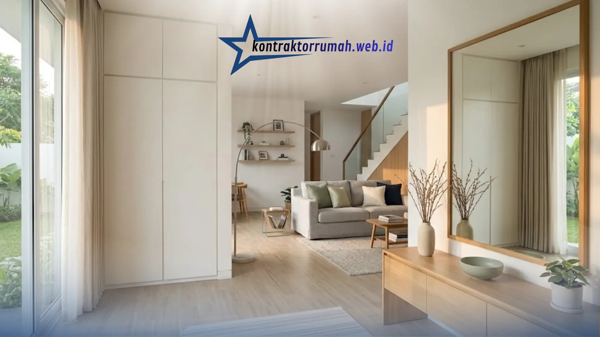

Rumah bukan sekadar tempat berteduh. Di sanalah kita beristirahat, berkumpul bersama keluarga, bahkan bekerja. Karena itu, desain interior rumah modern kini banyak dipilih: tampilannya bersih, fungsional, dan memberi rasa lega saat memasukinya.
Kabar baiknya, rumah bergaya modern tidak harus mahal atau luas. Dengan perencanaan yang tepat, rumah tipe kecil pun bisa terasa lapang dan nyaman. Artikel ini membahas ciri khas, ide praktis per ruangan, hingga kesalahan yang perlu dihindari.
Poin Penting
- Desain interior rumah modern berprinsip "form follows function": sederhana, fungsional, dan teratur.
- Gunakan aturan warna 60-30-10 dengan palet netral dan satu atau dua warna aksen.
- Padukan tiga lapis cahaya (ambient, task, accent) dan maksimalkan cahaya alami.
- Pilih furnitur multifungsi dan batasi material utama maksimal 3-4 jenis agar harmonis.
- Rumah tipe kecil tetap bisa lapang dengan warna terang, cermin besar, dan konsep open plan.
Apa Itu Desain Interior Rumah Modern?
Desain interior rumah modern adalah pendekatan menata ruang dengan prinsip kesederhanaan, fungsi, dan keteraturan. Gaya ini berkembang dari gerakan desain awal abad ke-20 yang mengedepankan prinsip "form follows function": bentuk mengikuti kegunaan.
Ciri utamanya antara lain:
- Garis bersih dan bentuk geometris tanpa ornamen berlebihan.
- Palet warna netral seperti putih, abu-abu, krem, dan hitam, dengan satu atau dua warna aksen.
- Furnitur minimalis yang ringkas dan multifungsi.
- Pencahayaan alami yang dimaksimalkan lewat jendela besar dan bukaan.
- Denah terbuka (open plan) yang menyatukan area seperti ruang tamu, ruang makan, dan dapur.
1. Mulai dari Palet Warna yang Tepat
Warna menentukan suasana ruangan. Pada desain interior rumah modern, warna netral menjadi dasar karena membuat ruang tampak lebih luas dan tenang.
Tips memilih warna:
- Gunakan aturan 60-30-10: 60% warna dominan (misalnya putih atau abu muda), 30% warna sekunder (kayu, abu tua), dan 10% warna aksen (hijau zaitun, biru navy, atau terakota).
- Pilih warna hangat seperti krem dan beige untuk kesan akrab, atau warna dingin seperti abu dan biru muda untuk kesan segar.
- Hindari terlalu banyak warna kontras dalam satu ruang agar tidak terasa ramai.
2. Maksimalkan Pencahayaan Alami dan Buatan
Cahaya yang baik membuat rumah terasa hidup dan sehat. Di iklim tropis seperti Indonesia, pencahayaan alami juga membantu menghemat listrik.
- Perbesar bukaan: jendela besar, pintu kaca geser, atau skylight memasukkan cahaya siang.
- Gunakan tirai tipis (sheer) agar cahaya tetap masuk tanpa silau.
- Padukan tiga lapis cahaya: ambient (lampu utama), task (lampu baca atau lampu meja kerja), dan accent (lampu sorot untuk lukisan atau rak).
- Pilih lampu LED hangat (sekitar 2700-3000K) untuk ruang keluarga dan kamar, serta cahaya lebih putih (4000K) untuk dapur dan area kerja.
3. Pilih Furnitur Minimalis dan Multifungsi
Furnitur yang tepat membuat ruangan lega dan tertata. Prinsipnya: kualitas dan fungsi di atas kuantitas.
- Pilih sofa berbentuk sederhana dengan kaki ramping agar lantai terlihat lebih luas.
- Manfaatkan furnitur multifungsi, seperti meja lipat, tempat tidur dengan laci penyimpanan, atau ottoman yang bisa menjadi kursi sekaligus kotak simpan.
- Gunakan furnitur built-in (lemari tanam, rak dinding) untuk memanfaatkan sudut dan menjaga ruang tetap rapi.
- Sisakan area kosong. Ruang yang "bernapas" justru menjadi ciri gaya modern.

Palet netral, furnitur ringkas, dan area kosong yang cukup menjadi kunci interior rumah modern yang terasa lapang.
4. Pilih Material yang Natural dan Tahan Lama
Interior modern sering memadukan material industrial dengan sentuhan alami agar tidak terasa dingin.
- Kayu (asli, veneer, atau HPL motif kayu) untuk kehangatan.
- Batu alam atau marmer (atau keramik motif serupa) untuk aksen dinding dan meja.
- Besi hitam dan kaca untuk partisi, rak, atau rangka meja.
- Tekstil alami seperti linen dan katun pada bantal, tirai, dan karpet.
Padukan maksimal 3-4 material utama agar tampilan tetap harmonis.
5. Ide Desain Interior Modern per Ruangan
Ruang Tamu
Jadikan sofa sebagai titik fokus, lalu lengkapi dengan meja kopi sederhana dan karpet berwarna netral. Dinding aksen (misalnya panel kayu atau cat warna berbeda di satu sisi) memberi karakter tanpa membuat ruangan penuh. Simpan perangkat elektronik pada kabinet TV yang rapi agar kabel tidak terlihat.
Ruang Makan dan Dapur
Dapur modern mengutamakan efisiensi alur kerja: kulkas, area cuci, dan kompor tersusun praktis (konsep kitchen work triangle). Gunakan kabinet berpermukaan polos tanpa banyak ukiran, serta kitchen island atau meja bar bila ruang memungkinkan. Material anti-air dan mudah dibersihkan seperti keramik dan HPL sangat disarankan.
Kamar Tidur
Kamar tidur adalah tempat beristirahat, jadi pilih warna lembut dan tata seperlunya. Gunakan tirai blackout untuk tidur lebih nyenyak, lampu tidur hangat di sisi ranjang, dan lemari tanam agar ruang gerak lebih lega. Hindari menumpuk barang di atas lemari atau di lantai.
Kamar Mandi
Pilih keramik berukuran besar dengan nat minimal agar mudah dibersihkan dan tampak luas. Kombinasikan warna netral dengan aksen material alami seperti kayu tahan air atau tanaman kecil. Pastikan sirkulasi udara dan pencahayaan cukup agar tidak lembap.
Ruang Kerja di Rumah
Letakkan meja dekat jendela agar mendapat cahaya alami. Pilih kursi ergonomis, sediakan rak vertikal, dan manfaatkan cable management agar area kerja tetap rapi. Pemisahan visual yang jelas dengan area bersantai membantu fokus.
6. Tips Desain Interior Modern untuk Rumah Kecil
Rumah tipe 36 atau 45 tetap bisa tampil modern dan lega dengan trik berikut:
- Gunakan warna terang pada dinding dan plafon agar ruang terasa luas.
- Pasang cermin besar untuk memantulkan cahaya dan menciptakan ilusi kedalaman.
- Manfaatkan dimensi vertikal dengan rak dinding dan lemari setinggi plafon.
- Satukan fungsi ruang lewat konsep open plan, misalnya ruang tamu dan ruang makan tanpa sekat permanen.
- Pilih furnitur berukuran proporsional, jangan memaksakan sofa besar di ruang sempit.
- Terapkan lantai yang seragam di seluruh ruangan agar visual menyatu.
7. Tambahkan Sentuhan Personal dan Tanaman
Rumah modern bukan berarti kaku. Beri karakter dengan:
- Tanaman hias seperti monstera, sansevieria, atau lidah mertua untuk kesan segar.
- Karya seni, foto keluarga, atau koleksi pribadi yang ditata terkurasi.
- Bantal dan selimut dengan tekstur berbeda untuk kehangatan.
Kuncinya adalah kurasi: pilih beberapa elemen berkesan, bukan memajang semuanya.
Kesalahan yang Sering Terjadi dalam Desain Interior Modern
- Terlalu minimalis hingga terasa dingin. Tambahkan tekstur dan warna hangat.
- Mengabaikan penyimpanan. Ruang rapi butuh tempat simpan yang cukup.
- Membeli furnitur tanpa mengukur ruangan. Selalu ukur dan buat sketsa denah.
- Mengikuti tren tanpa mempertimbangkan kebiasaan penghuni. Rumah harus nyaman bagi yang tinggal.
- Pencahayaan yang kurang. Satu lampu utama saja jarang cukup.
Langkah Praktis Memulai
- Tentukan kebutuhan dan anggaran.
- Buat moodboard (kumpulan referensi warna, material, dan furnitur).
- Rancang denah dan tata letak furnitur.
- Pilih palet warna dan material utama.
- Beli furnitur bertahap, mulai dari yang paling penting.
- Lengkapi dengan dekorasi dan tanaman di tahap akhir.
Catatan dari tim Kontraktor Rumah: Butuh bantuan mewujudkan interior rumah modern? Layanan jasa desain interior kami siap membantu dari perencanaan denah dan pemilihan material hingga eksekusi di lapangan, dengan RAB yang transparan.
FAQ Seputar Desain Interior Rumah Modern
Desain interior rumah modern menekankan kesederhanaan, fungsi, dan kenyamanan. Dengan palet warna netral, pencahayaan yang baik, furnitur multifungsi, serta material alami, rumah akan terasa lebih lapang, rapi, dan menyenangkan, berapa pun ukurannya.